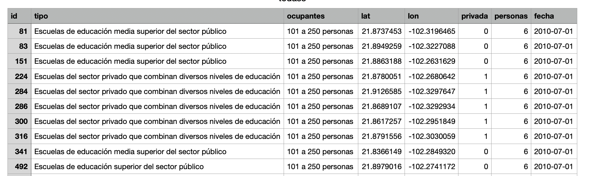

Desde la época prehispánica, los centros educativos en México han sido una parte integral de su historia, como los Calmécac, establecidos por los Aztecas. Durante la época colonial, la Real y Pontificia Universidad de México, fundada en 1553 por decreto del Virrey Luis de Velasco, marcó otro hito importante. En tiempos más recientes, el Instituto Politécnico Nacional, establecido en 1936, ha contribuido significativamente al panorama educativo del país.
Esta visualización busca trazar la evolución histórica de las instituciones educativas en México, tanto públicas como privadas, desde el año 2010 hasta el 2023. Se enfoca en mostrar no solo el número de instituciones creadas en ese lapso, sino también su distribución geográfica a lo largo del tiempo lo cuál, a mi parecer, le aporta su máximo valor.
El poder de esta visualización radica en su capacidad para invitar al observador a reflexionar sobre los diversos factores que han influido en la creación de instituciones educativas en México. Estos factores pueden abarcar desde efectos económicos y cambios políticos hasta el impacto de la pandemia, entre otros aspectos relevantes. Al explorar la evolución de estas instituciones a lo largo del tiempo, se ofrece una perspectiva más completa de cómo el contexto social, económico y político ha moldeado el paisaje educativo del país.
En consonancia con el título, la preparación de un país para enfrentar los desafíos del futuro se ve reflejada en las inversiones que realiza en educación, incluida la fundación de instituciones educativas relevantes a lo largo del tiempo.
Fuentes:
Banco de datos DENUE del Instituto Nacional de Estadística, Geografía e Informática (INEGI)
Filtro: DENUE/Actividad económica/Servicios educativos/11/2023
https://www.inegi.org.mx/app/descarga/default.html
Licencia: El uso de la información del INEGI es pública y puede revisarse la licencia de uso así como los términos y condiciones en:
https://www.inegi.org.mx/inegi/terminos.html
Para la delimitación de los estados de la república mexicana los datos se recuperaron de un repositorio de Github:
https://github.com/PhantomInsights/mexico-geojson/tree/main/2022
La licencia para la información geográfica es MIT (free of charge to any person)
Toda la visualización se ha realizado con HTML, CSS, Javascript y las librerías: D3.JS y topojson.js
D3.js es una librería JavaScript open-source, libre para la visualiación de datos. Es una aproximación de bajo nivel para la autoría dinámica de gráficos basados en datos
TopoJSON es una extensión de GeoJSON que codifica información topológica (ayuda a eliminar las redundancias geométricas)
https://github.com/topojson/topojson
| Privadas (251 o mas ocupantes) |
| Privadas (101 a 250 ocupantes) |
| Públicas (251 o mas ocupantes) |
| Públicas (101 o 250 ocupantes) |
La visualización atendió a la sencillez. Mostrando solo en color de contraste la información de las instituciones y lo demás en gris/blanco
El mapa permite el zoom y pan dinámicos
Puntos de mejora:
Crear tamaños dinámicos para la representación de las instituciones (circulos) considerando el tañano de la institución
Crear ayudas visuales para mostrar instituciones públicas y/o privadas
Permitir un drill-downn para recuperar mas información basada en click sobre items
Finalmente un control para mostrar todo en un solo mapa dinámico como en:
https://observablehq.com/@d3/walmarts-growth?intent=fork
Este análisis visual logra su cometido al generar curiosidad sobre los factores que influyeron en la creación de instituciones educativas en México, así como su distribución geográfica y temporal. Sin embargo, para obtener una comprensión más completa, sería beneficioso complementar estos datos con otras fuentes, como el crecimiento poblacional, cambios políticos y económicos.
Para captar el interés del espectador se inició por un título provocador e intrigante y, se continuó por mostrar solo aquello de interés. Se facultó al usuario a poder interactuar con la visualización para por sus propios medios descubra la información y se concentre en aquello de su propio interés.